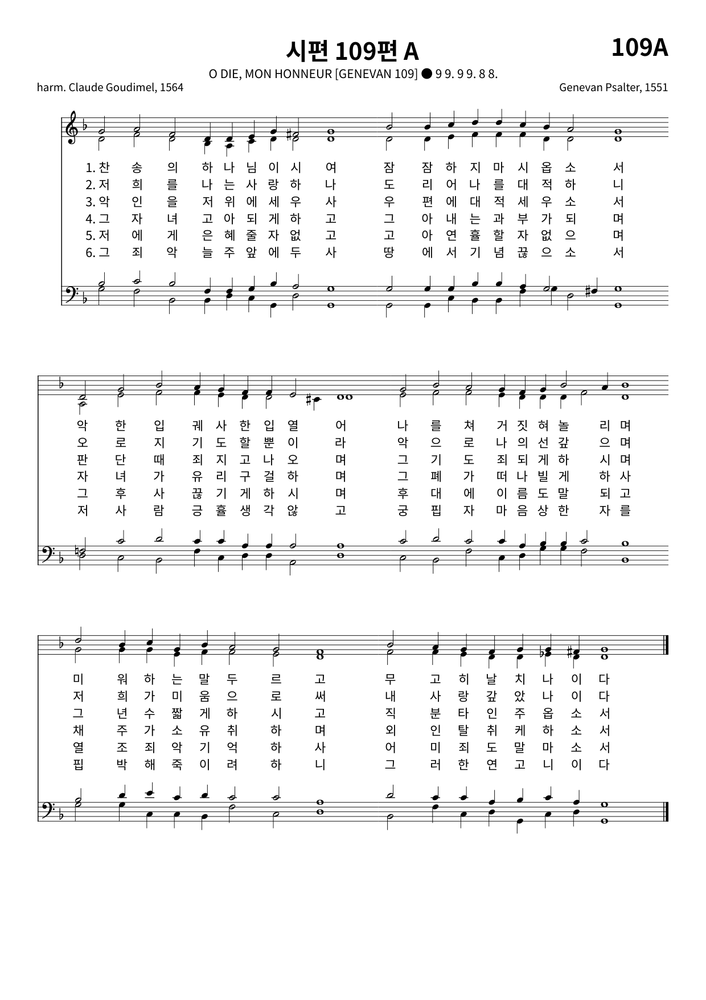

Psalm 109A
O DIE, MON HONNEUR [GENEVAN 109] · 9 9. 9 9. 8 8.
English title: O Be Not Silent, Heed and Hear Me
Tune: Genevan Psalter, 1551 · Harmony: Claude Goudimel, 1564 · Lyrics: Korean adaptation of Psalm 109 from the Korean Revised Version (AI draft adaptation · not yet theologically reviewed) · 6 stanzas
Psalm 109 is divided into 2 tunes: A B · This tune contains stanzas 1–6 of the Psalm 109 lyrics.
Score PDF MusicXML (for printing) MusicXML (for accompaniment, with prelude and repeats) Read Psalm 109 (Korean Revised Version)
Score
← Psalm 108 ListAccompaniment (in preparation)Psalm 109B →
Lyrics (Korean)
Stanza 1
찬송의 하나님이시여
잠잠하지 마시옵소서
악한 입 궤사한 입 열어
나를 쳐 거짓 혀 놀리며
미워하는 말 두르고
무고히 날 치나이다
찬송의 하나님이시여
잠잠하지 마시옵소서
악한 입 궤사한 입 열어
나를 쳐 거짓 혀 놀리며
미워하는 말 두르고
무고히 날 치나이다
Stanza 2
저희를 나는 사랑하나
도리어 나를 대적하니
오로지 기도할 뿐이라
악으로 나의 선 갚으며
저희가 미움으로써
내 사랑 갚았나이다
저희를 나는 사랑하나
도리어 나를 대적하니
오로지 기도할 뿐이라
악으로 나의 선 갚으며
저희가 미움으로써
내 사랑 갚았나이다
Stanza 3
악인을 저 위에 세우사
우편에 대적 세우소서
판단 때 죄 지고 나오며
그 기도 죄 되게 하시며
그 년수 짧게 하시고
직분 타인 주옵소서
악인을 저 위에 세우사
우편에 대적 세우소서
판단 때 죄 지고 나오며
그 기도 죄 되게 하시며
그 년수 짧게 하시고
직분 타인 주옵소서
Stanza 4
그 자녀 고아 되게 하고
그 아내는 과부가 되며
자녀가 유리 구걸하며
그 폐가 떠나 빌게 하사
채주가 소유 취하며
외인 탈취케 하소서
그 자녀 고아 되게 하고
그 아내는 과부가 되며
자녀가 유리 구걸하며
그 폐가 떠나 빌게 하사
채주가 소유 취하며
외인 탈취케 하소서
Stanza 5
저에게 은혜 줄 자 없고
고아 연휼할 자 없으며
그 후사 끊기게 하시며
후대에 이름 도말되고
열조 죄악 기억하사
어미 죄 도말 마소서
저에게 은혜 줄 자 없고
고아 연휼할 자 없으며
그 후사 끊기게 하시며
후대에 이름 도말되고
열조 죄악 기억하사
어미 죄 도말 마소서
Stanza 6
그 죄악 늘 주 앞에 두사
땅에서 기념 끊으소서
저 사람 긍휼 생각 않고
궁핍자 마음 상한 자를
핍박해 죽이려 하니
그러한 연고니이다
그 죄악 늘 주 앞에 두사
땅에서 기념 끊으소서
저 사람 긍휼 생각 않고
궁핍자 마음 상한 자를
핍박해 죽이려 하니
그러한 연고니이다